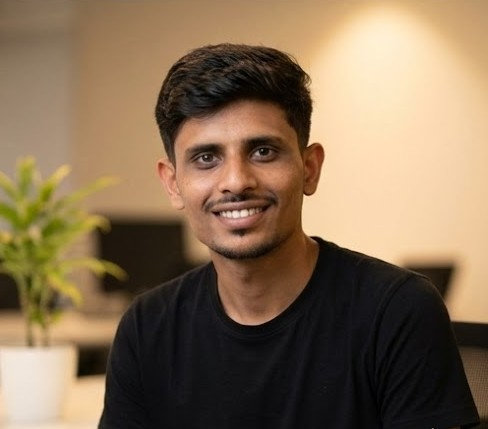

Design & Development of Smart RC Boat
Jan 2026 – PresentDesigning an MCU-based embedded system.
Agricultural and Aquacultural Engineering professional specializing in machine learning, spatial-temporal data analysis, embedded systems, and hydrology. Dedicated to advancing technical solutions and precision engineering, including building IoT-enabled autonomous water sampling systems.

Designing an MCU-based embedded system.
Developed an AI-assisted NDWI workflow using Sentinel-2/Landsat-8 imagery to extract and delineate surface water bodies, applying ML refinement and GIS tools for accurate hydrological assessment.
Developed a machine learning model aimed at the early detection and screening of Autism Spectrum Disorder based on behavioral data points.
Engineered and fabricated a semi-automated, low-cost grain cleaner using a slider-crank mechanism and AC motor-driven system tailored for small-scale farmers.
Estimated spatial distribution of waterbodies at the block level using multi-temporal satellite data. Analyzed yearly trends through spatial-temporal analysis.
Mapped and geolocated key tourist destinations in Chhindwara district using QGIS. Performed route analysis to identify optimal travel paths for tourism planning.
Experiential Learning Unit, Dr. PDKV
Learned post-harvest engineering techniques and food processing technologies. Gained practical knowledge of sales and marketing in the agri-food sector.
Central Farm Machinery Training & Testing Institute, Budni
Operated and maintained tractors and agricultural machinery. Repaired 5 HP single-cylinder diesel engines and learned comprehensive tractor testing methodologies.
ICAR-Indian Institute of Soil & Water Conservation, Kota
Studied watershed management techniques for soil and water conservation. Worked extensively with remote sensing, Google Earth Pro, and QGIS software.
Indian Institute of Technology (IIT) Kharagpur
Current CGPA: 8.96 / 10
Dr. Panjabrao Deshmukh Krishi Vidyapeeth, Akola
CGPA: 8.26 / 10
Secured 1st rank in B.Tech with the highest CGPA in the graduating batch.
I am currently open to new opportunities in IoT, Agri-Tech, Embedded Systems, and ML. Whether you have a project in mind, a potential collaboration, or just want to discuss sustainable engineering, I'd love to hear from you.